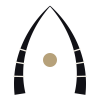

Wisdom · Timing · Legacy
El símbolo
El Cuerno-Arco.
Dos cuernos
Los de la cabra de Capricornio, que se tocan en la punta.
Un arco
Un portal renacentista y la cima de una montaña: ambición con estructura.
Un sol
Al centro, el momento exacto. El único color de la marca.
Firma
Sobre claro
Isotipo
Palabra · las A son el arcoColor
Noche, luz
y un sol.
Noche#08080A
Grafito#15151B
Platino#A3A3AD
Luz#F2F0EA
Sol#D9C08A
Tipografía
Timing
Marcellus · títulosPara Founders y CEOs que saben que existe una energía disponible en el Todo.
Archivo · textoJD 2461371.8 · ☉ 05°05′
IBM Plex Mono · datos